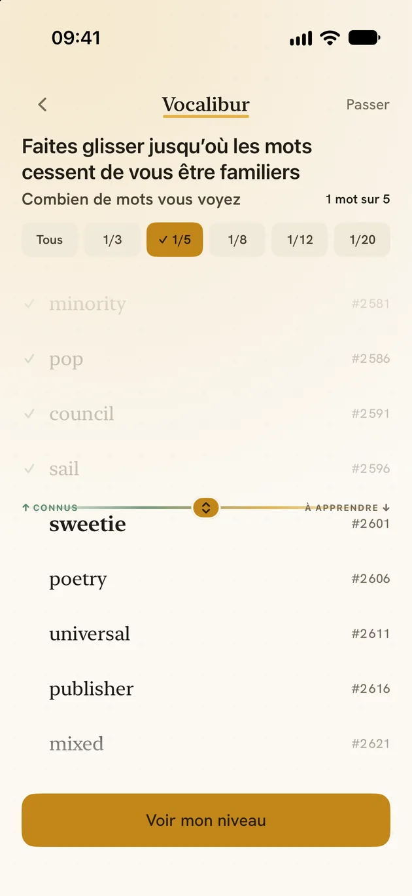

Quels mots apprendre ?
Partez de ce que vous connaissez déjà.
Faites défiler la liste des mots, du plus courant au plus rare, et placez votre point de départ. Vocalibur propose ensuite les nouveaux mots par fréquence : 30 000 cartes, des repères de niveau et 55 thèmes.